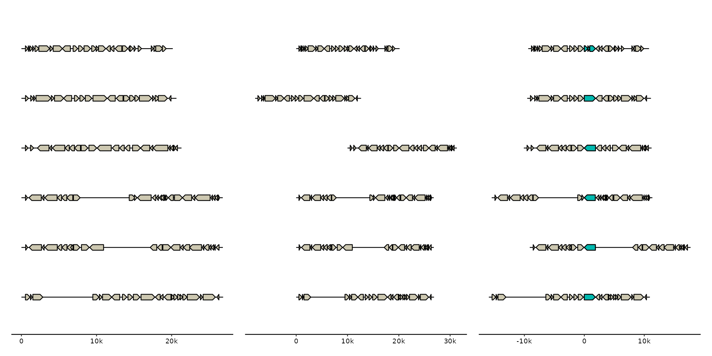

Shift bins along the x-axis, i.e. left or right in the default plot layout. This is useful to align feats of interest in different bins.
Examples
p0 <- gggenomes(emale_genes, emale_seqs) +
geom_seq() + geom_gene()
# Slide one bin left and one bin right
p1 <- p0 |> shift(2:3, by = c(-8000, 10000))
# align all bins to a target gene
mcp <- emale_genes |>
dplyr::filter(name == "MCP") |>
dplyr::group_by(seq_id) |>
dplyr::slice_head(n = 1) # some have fragmented MCP gene, keep only first
p2 <- p0 |> shift(all_of(mcp$seq_id), by = -mcp$start) +
geom_gene(data = genes(name == "MCP"), fill = "#01b9af")
library(patchwork)
p0 + p1 + p2
